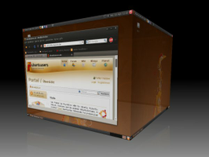
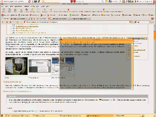
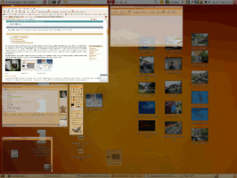

3D-Desktop
 Diese Seite soll einen Überblick über die nötigen Grundlagen geben, die für das Aktivieren von Desktop-Effekten wie Fensterschatten und Transparenz vorhanden sein müssen. Die folgenden Bilder zeigen einige der verbreitetsten Effekte, die mit einem 3D-Desktop möglich sind.
Diese Seite soll einen Überblick über die nötigen Grundlagen geben, die für das Aktivieren von Desktop-Effekten wie Fensterschatten und Transparenz vorhanden sein müssen. Die folgenden Bilder zeigen einige der verbreitetsten Effekte, die mit einem 3D-Desktop möglich sind.
|  |
| Würfel |
|  |
| Transparenz |
|  |
| Exposé |
Voraussetzung: der Grafikkartentreiber¶
Zuerst muss die Grafikkarte eine ausreichende 3D-Beschleunigung bieten, damit die Effekte auch flüssig dargestellt werden können. Was im Jahre 2008 noch extra erwähnt werden musste, spielt bei neuerer Grafik-Hardware keine Rolle mehr.
AMD¶
Es gibt zwei Möglichkeiten, einen 3D-Desktop mithilfe einer AMD-Grafikkarte zu realisieren:
radeon¶
Mit dem radeon-Treiber lässt sich AIGLX auf den meisten Karten nutzen. Der freie Treiber unterstützt die 3D-Funktionalität von AMD-Grafikkarten bis zur Chipsatz-Familie "Sea Islands", der in der Serie "HD 8000" ab dem Jahr 2013 auf den Markt kam. Für sehr neue Karten sollte man – soweit möglich – auf den fglrx-Treiber zurückgreifen.
Eine Ausnahme bilden die "Mobile"-Karten, wie sie in manchen älteren Laptops verwendet wurden. Mit diesen funktionieren standardmäßig keine Effekte mit diesem Treiber, da sie wegen angeblicher Probleme auf eine "Blacklist" gesetzt wurden. Dies muss erst durch eine Überbrückung umgangen werden.
fglrx¶
Der proprietäre fglrx-Treiber unterstützt AIGLX. Allerdings steht dieser ab Ubuntu 16.04 nicht mehr zur Verfügung. Stattdessen wird von AMD nur noch der Treiber amdgpu angeboten.
Intel¶
Integrierte Grafikkarten von Intel waren die ersten, welche die benötigten Funktionen boten. Im Grundsatz lässt sich sagen, dass die 3D-Fähigkeit nahezu immer problemlos unterstützt wird. Es gibt folgende Ausnahmen:
Der 2005 erschienene integrierte Grafikprozessor "945 GM" hat sich in der Praxis als nicht 3D-fähig erwiesen. Die GPU war nur kurz auf dem Markt, so dass Geräte mit dieser GPU heute recht selten sind. Die GPU kam nur auf mobilen Geräten (Notebooks) zum Einsatz.
Der integrierte Grafikprozessor "GMA 500", der 2008 auf den Markt kam, ist unter Linux generell nicht 3D-fähig, obwohl diese GPU das hardwareseitig beherrscht. Es ist sogar für die normale Funktion als 2D-Desktop ein spezieller Treiber nötig. Dieser Problemfall, der Intel Kritik einbrachte, verhindert somit den Betrieb eines 3D-Desktops. Der GMA 500 wurde nur in Mobilgeräten eingesetzt, vor allem im Netbookbereich (bei unterschiedlichen Marken).
Matrox¶
Matrox-Karten mit den Chips MGA G200 bis zum G550 funktionieren nach entsprechender Konfiguration mit AIGLX.
Nvidia¶
Für dedizierte Grafikkarten von Nvidia gibt es zwei Treiber, nämlich den quelloffenen nouveau und den proprietären nvidia. Bezüglich 3D-Unterstützung unterscheiden sich diese Treiber heute nicht mehr, d.h. beide unterstützen bei allen Karten die 3D-Funktionalität vollständig.
SiS¶
Die meisten SiS-Grafikarten haben keine OpenGL-Unterstützung in den Treibern. Nur Modelle der Reihe 300 (das wären 300/305, 630, 730) unterstützen OpenGL und Compositing. Mit diesen Karten besteht also die prinzipielle Möglichkeit, die spezifischen Effekte der Desktop-Umgebungen zu nutzen. Allerdings ist das oft durch die geringe Leistung dieser Grafikkarten nur eingeschränkt oder gar nicht möglich.
Dazwischen: der beschleunigte XServer¶
Die nächste Ebene nach dem Grafikkartentreiber ist ein XServer mit AIGLX-Unterstützung. Diese Voraussetzung ist bei Ubuntu standardmäßig erfüllt. Eine manuelle Konfiguration ist nicht erforderlich.
Die Darstellung: Composite- und Fenstermanager¶
Auf der obersten Ebene werden die eigentlichen Effekte erzeugt. Prinzipiell werden dabei zwei Bestandteile benötigt:
der Fenstermanager organisiert die Fensterverwaltung und zeichnet die Fensterrahmen
der Composite-Manager sorgt für die schicken Effekte
Die großen Desktop-Umgebungen realisieren dabei ihre Effekte wie Transparenz und Schatten über (entwicklungsgeschichtlich) ähnliche Programme, die im Falle von Compiz auch mit anderen Fenstermanager wie z.B. Fluxbox genutzt werden können.

Compiz¶
Compiz war die erste Software dieser Art, die weite Verbreitung gefunden hat. Sie kann unter GNOME, KDE, Xfce oder auch ohne Desktop-Umgebung benutzt werden. Bei Unity ist Compiz bereits in der Voreinstellung aktiv. Unter dem Projektnamen Compiz Fusion wurden früher einige Ergänzungen separat entwickelt. Inzwischen firmieren die beiden Projekte wieder unter dem gemeinsamen Namen Compiz.

GNOME 3¶
GNOME 3 enthält mit der GNOME Shell einen eigenen 3D-Desktop. Für grafische Effekte kommt das neue OpenGL-basierte Framework mutter (mETACITY + CLutter) zum Einsatz.

KDE¶
KDE Plasma 4 und 5 bzw. KWin beherrschen Compositing mit den sogenannten Arbeitsflächeneffekten. Diese sind standardmäßig aktiviert.
MATE¶
Über MATE Tweak bzw. "System -> Einstellungen -> MATE Tweak -> Interface" kann das Compositing des Fenstermanagers Marco bequem ein- oder ausgeschaltet werden.


LXDE¶
Bei LXDE wird aus Geschwindigkeitsgründen auf Transparenz-, Schatten- und sonstige Effekte bewusst verzichtet. Wer einen Composite-Manager nutzen möchte, nimmt eines der im nächsten Abschnitt erwähnten Programme wie beispielsweise xcompmgr odet Compton.
Weitere Programme¶
Wer einen alleinstehenden Fenstermanager mit Desktop-Effekten ausstatten möchte, dem stehen neben Compiz vier weitere Programme zur Verfügung, mit denen man Wege abseits des Mainstreams beschreiten kann:
xcompmgr - der Klassiker
Compton - Abspaltung von xcompmgr, noch in aktiver Entwicklung
Unagi
 - ab Ubuntu 12.04 in den offiziellen Paketquellen
- ab Ubuntu 12.04 in den offiziellen Paketquellen
- Erstellt mit Inyoka
-
 2004 – 2017 ubuntuusers.de • Einige Rechte vorbehalten
2004 – 2017 ubuntuusers.de • Einige Rechte vorbehalten
Lizenz • Kontakt • Datenschutz • Impressum • Serverstatus -
Serverhousing gespendet von